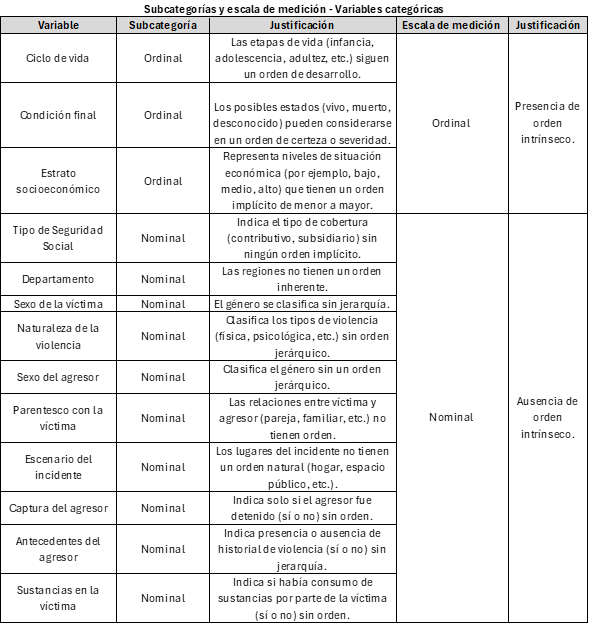

Relevancia temática y
objetivos de estudio
La violencia de género, entendida como cualquier acto que cause daño
físico, psicológico o sexual a una persona debido a su género,
representa una de las problemáticas más urgentes y complejas a nivel
mundial, pues este tipo de violencia, que abarca abusos físicos,
psicológicos, sexuales y económicos, está profundamente ligado a las
desigualdades de poder y los estereotipos de género en la sociedad,
perpetuando ciclos de sufrimiento y exclusión para quienes la
padecen(Naciones Unidas 2023). Según la
Organización Mundial de la Salud (OMS), aproximadamente una de cada tres
mujeres, o el 30%, ha sufrido violencia física o sexual por parte de su
pareja en algún momento de su vida, lo que subraya la gravedad de esta
crisis en términos de salud pública y derechos humanos (Naciones Unidas 2021).
En América Latina, la situación es igualmente alarmante. La Comisión
Económica para América Latina y el Caribe (CEPAL) informó que en 2022 al
menos 4.050 mujeres fueron víctimas de femicidio o feminicidio en 26
países y territorios de la región, lo que equivale a una mujer asesinada
por razones de género cada dos horas (Comisión
Económica para América Latina y el Caribe (CEPAL) 2023). Aunque
la violencia de género afecta desproporcionadamente a las mujeres, los
hombres también son víctimas, especialmente en contextos
intrafamiliares; sin embargo, estos casos suelen recibir menos
visibilidad y atención en los estudios y políticas(Instituto Nacional de Salud (INS) 2021).
En Colombia, la violencia de género es considerada una de las mayores
preocupaciones en términos de salud pública y desarrollo social. Según
el Instituto Nacional de Medicina Legal y Ciencias Forenses, en 2021 se
registraron 116.302 casos de violencia de género e intrafamiliar, de
estos, el 79,1% (92.020 casos) correspondieron a mujeres, mientras que
el 20,9% (24.282 casos) correspondieron a hombres (Instituto Nacional de Salud (INS) 2021). Estas
cifras evidencian que, aunque la violencia de género afecta
principalmente a mujeres, no es exclusiva de ellas, y afecta también a
una proporción significativa de hombres, lo que resalta la necesidad de
un enfoque inclusivo y amplio para abordar esta problemática.
Además de causar sufrimiento directo a las víctimas, la violencia de
género genera efectos profundos en el conjunto de la sociedad, tanto en
términos económicos como sociales. Según el Banco Interamericano de
Desarrollo (BID), el impacto económico de la violencia de género en
América Latina alcanza hasta el 3.44% del PIB de la región, debido a los
elevados costos en servicios de salud, justicia y la pérdida de
productividad asociada a las secuelas de esta violencia (Banco Interamericano de Desarrollo (BID) 2024).
En Colombia, estos efectos se ven agravados por factores como el
conflicto armado, la desigualdad económica y los estereotipos de género,
que incrementan la prevalencia de la violencia de género en sus diversas
manifestaciones, según señala el Ministerio de Salud y Protección Social
(Comisión Económica para América Latina y el
Caribe (CEPAL) 2020).
Por tanto, para abordar de manera integral la violencia de género en
Colombia y desarrollar intervenciones efectivas, es fundamental basarse
en un análisis detallado de los datos disponibles. En este contexto, el
presente estudio se centra en el análisis de los datos sobre violencia
de género en Colombia entre 2015 y 2023, con el objetivo general de
identificar los perfiles de riesgo de víctimas y agresores, así
como los factores situacionales asociados a la violencia de género e
intrafamiliar en el país, para comprender los patrones demográficos y
contextuales que aumentan la probabilidad de estos incidentes.
A través de este estudio, se plantea responder a la pregunta de
investigación: ¿Cuáles son los perfiles de riesgo demográficos y
situacionales asociados a las víctimas y agresores en los casos de
violencia de género en Colombia entre 2015 y 2023? Para responder a esta
cuestión, se establecen los siguientes objetivos específicos:
- Identificar los perfiles de riesgo
sociodemográficos de las víctimas de violencia de género en Colombia,
evaluando factores como edad, sexo, ciclo de vida y otros elementos que
indiquen los grupos más vulnerables.
- Definir los perfiles de riesgo de los agresores,
analizando edad, sexo, ciclo de vida, parentesco con la víctima,
antecedentes de violencia y estado de captura.
- Examinar factores situacionales de los incidentes,
como el lugar y la influencia del consumo de sustancias en las víctimas,
para identificar entornos y circunstancias de mayor riesgo.
Descripción técnica del
dataset y contextualización
Este estudio utiliza una base de datos robusta y detallada sobre
violencia de género en Colombia, abarcando incidentes registrados
semanalmente entre enero de 2015 y marzo de 2023. Esta base de datos
tomada de datos abiertos Colombia, con 12,193 registros y 32 variables
en su versión original, constituye un recurso invaluable para el
análisis de un fenómeno de alta complejidad social y relevancia,
permitiendo investigar en profundidad los factores demográficos,
socioeconómicos y contextuales asociados a los incidentes de violencia
de género. La amplitud y riqueza de las variables, que incluyen
características detalladas de víctimas y agresores, la relación entre
ambos, y las circunstancias específicas de cada evento, aportan una
perspectiva integral sobre los perfiles y patrones subyacentes en estos
casos (Salud y Ambiente 2024). Sin
embargo, algunas variables de la base de datos original son redundantes,
otras tienen bajo valor explicativo para identificar patrones de
violencia o perfiles de riesgo, algunas columnas se encuentran
incompletas y algunas contienen datos administrativos o contextuales que
no contribuyen de manera significativa al análisis de la violencia de
género.
Por ende, para maximizar la relevancia y aplicabilidad de la base de
datos en el contexto de los objetivos y preguntas de investigación, se
realizó una depuración exhaustiva de las variables. Este proceso implicó
la eliminación de columnas redundantes y de baja contribución analítica,
preservando solo aquellas que resultan críticas para el análisis.
Además, se transformaron codificaciones complejas en etiquetas
descriptivas, mejorando así la accesibilidad y claridad interpretativa
de los datos. El conjunto depurado, compuesto ahora por 12,193 registros
y 17 variables clave, se centra en la información esencial que permite
una exploración precisa de patrones, factores de riesgo, y contextos de
violencia en los distintos incidentes registrados.
A continuación se exponen las variables a estudiar de la base de
datos modificada, las cuales se configuran como parámetros bajo estudio
bajo estudio que capturan una gama de aspectos de los individuos y las
circunstancias que rodean cada incidente de violencia de género,
permitiendo explorar temas como los perfiles sociodemográficos de
víctimas y agresores:
names(violencia_genero) #Nombre de las columnas y por tanto de las variables
## [1] "Departamento" "año"
## [3] "edad_victima" "Ciclo de vida"
## [5] "sexo_victima" "estrato"
## [7] "Tipo de Seguridad Social" "con_fin_"
## [9] "def_naturaleza" "edad_agre"
## [11] "sexo_agre" "parentezco_vict"
## [13] "escenario" "captura_agresor"
## [15] "antecedentes_agresor" "sust_vic"
Por otro lado, como bien se mencionó, el conjunto de datos actual
cuenta con 12,193 filas, que corresponden al total de observaciones o
unidades experimentales en el dataset. Cada fila representa una unidad
experimental, es decir, un incidente específico de violencia de género o
intrafamiliar, documentado con datos detallados en cada una de las 16
variables, lo que permite construir un perfil exhaustivo que incluye
características demográficas de la víctima y el agresor, el contexto del
incidente y otros factores relevantes. Con 12,193 unidades
experimentales y 16 variables, el conjunto de datos contiene un total de
195,088 entradas, lo cual habilita un análisis estadístico tanto
descriptivo como inferencial sobre los patrones y factores asociados a
la violencia de género.
num_rows <- nrow(violencia_genero) #Número de observaciones (filas)
num_colums <- ncol(violencia_genero) #Número de variables (columnas)
total_values <- num_rows*num_colums #Total de datos
num_rows
## [1] 12193
## [1] 16
## [1] 195088
Clasificación de
variables
Para un análisis descriptivo adecuado, es crucial clasificar las
variables en función de su tipo. En esta base de datos sobre violencia
de género, se distinguen variables categóricas y numéricas, lo cual
facilita la elección de métodos analíticos específicos. Las variables
categóricas se analizan mediante distribuciones de frecuencia en
aspectos como género, parentesco y escenario del incidente. Las
variables numéricas, en cambio, se describen usando medidas de tendencia
central y dispersión (media, mediana, desviación estándar), lo que ayuda
a identificar patrones en la edad de los involucrados. Esta
clasificación asegura la precisión en la descripción de características
y patrones en los datos.
Variables
Categóricas
Departamento:: es una etiqueta
geográfica que identifica la ubicación de cada incidente,
permitiendo analizar patrones regionales de violencia y enfocar recursos
en áreas con mayor incidencia.
Ciclo de vida: representa una categoría
de etapa de vida que indica la etapa de vida de la víctima
(infancia, adolescencia, adultez), ayudando a entender cómo varía el
riesgo de violencia según la edad y desarrollo.
Sexo de la víctima: es una categoría de
género que identifica si la víctima es masculina o femenina, es
clave para analizar a distribución y dinámica de la violencia entre
géneros.
Estrato socioeconómico: etiquetas para
diferentes niveles socioeconómicos (bajo, medio, alto, etc.)
que permite analizar cómo el contexto económico afecta la vulnerabilidad
y el riesgo de las víctimas de violencia.
Tipo de Seguridad Social : Indica el sistema de
cobertura (público o privado) de la víctima, lo cual ayuda a entender el
acceso a recursos de atención y calidad de respuesta.
Condición final: Describe el estado de la
víctima tras el incidente (“vivo”, “muerto”, “desconocido”), permitiendo
evaluar el riesgo de mortalidad y limitaciones en el seguimiento de
casos.
Naturaleza de la violencia: Clasifica el tipo de
violencia (física, psicológica, sexual), fundamental para entender las
formas más comunes de agresión.
Sexo del agresor: es una categoría de género
para el agresor (masculino, femenino,intersexual), la cual permite
observar los patrones de agresión según el género del agresor,
proporcionando datos útiles para estrategias de prevención y
perfilamiento.
Parentesco con la víctima: es una
categoría de relación que define el tipo de vínculo
entre la víctima y el agresor (pareja, familiar, desconocido)lo cual
permite entender cómo los lazos familiares o cercanos pueden influir en
la dinámica de la violencia, aspecto crucial para entender los contextos
en los que ocurre.
Escenario del incidente: describe el
contexto físico del incidente (hogar, espacio público),
la cual permite identificar los lugares más comunes donde ocurre la
violencia, lo que es importante para desarrollar estrategias de
prevención y seguridad adaptadas a esos entornos.
Captura del agresor: es un indicador
legal que señala si el agresor fue detenido tras el incidente
(sí, no o desconocido), el cual es relevante para evaluar la respuesta
institucional frente a los casos de violencia, permitiendo analizar la
efectividad y rapidez de las intervenciones legales.
Antecedentes del agresor: es un
historial de comportamiento que muestra si el agresor
tenía un historial previo de violencia, útil para entender patrones de
reincidencia, contribuyendo a la identificación de perfiles de
riesgo.
Sustancias en la víctima: Sustancias en la
víctima es una variable cualitativa que actúa como un indicador
binario de influencia de sustancias en la víctima al momento
del incidente, lo cual ayuda a explorar la relación entre consumo y
violencia, aportando al perfil de riesgo.
Variables
Cuantitativas
Año: es una dimensión temporal
que indica el año en que ocurrió el incidente. Al tratarse de un valor
numérico, permite analizar la evolución de los casos a lo largo del
tiempo y detectar tendencias en la frecuencia de los incidentes de
violencia.
Edad de la víctima: es una medida de
edad numérica que permite analizar patrones de violencia según
los diferentes grupos de edad de las víctimas. Esta variable es esencial
para identificar los rangos etarios más vulnerables y orientar las
intervenciones preventivas.
Edad del agresor: también es una medida
de edad numérica, en este caso del agresor, y es útil para
observar patrones de agresión en función de la edad del agresor. Este
análisis contribuye a la identificación de perfiles etarios específicos
asociados a comportamientos violentos.
Subclasificación de
variables y escalas de medición
Si bien las variables se clasifican principalmente en cualitativas y
cuantitativas, estás también se pueden dividir en subcategorías
dependiendo si son numéricas o categóricas y, además, pueden adaptar
diversas escalas de medición. A continuación, se presentan 2 tablas que
resumen esta información.
Variables
Categóricas

Nota: Tabla de elaboración propia
Las variables categóricas en este conjunto de datos se dividen en
nominales y ordinales, cada una con un rol en el análisis de violencia
de género. Las variables nominales (“Departamento”, “Sexo de la
víctima”, “Tipo de Seguridad Social”, “Escenario del incidente”)
permiten agrupar datos sin un orden específico, siendo clave para
observar patrones de distribución geográfica, género y contextos de los
incidentes mediante análisis de frecuencia. En cambio, las variables
ordinales (“Ciclo de vida”, “Estrato socioeconómico”, “Condición final”)
tienen un orden implícito que permite jerarquizar categorías,
facilitando el análisis de tendencias y la relación entre el nivel
socioeconómico o la etapa de vida y la vulnerabilidad ante la violencia.
Distinguir entre nominales y ordinales es crucial para aplicar análisis
estadísticos adecuados y obtener conclusiones significativas sobre los
perfiles de riesgo en violencia de género.
Variables
Cuantitativas

Nota: Tabla de elaboración propia
Las variables cuantitativas en este conjunto son discretas y útiles
para analizar patrones temporales y demográficos. La Edad de la víctima
y Edad del agresor se miden en años enteros en una escala de razón,
permitiendo comparaciones proporcionales (por ejemplo, una persona de 40
años es el doble de mayor que alguien de 20), lo que ayuda a identificar
patrones de edad en violencia. La variable Año también es discreta, pero
en una escala de intervalo. Esto permite observar cambios a lo largo del
tiempo, aunque sin un “cero absoluto” de tiempo, útil para analizar
tendencias anuales en la violencia de género. Distinguir entre escala de
razón y de intervalo permite aplicar técnicas analíticas precisas: edad
para análisis proporcionales y año para estudiar patrones temporales,
proporcionando una visión completa de los factores de riesgo en
violencia de género.
